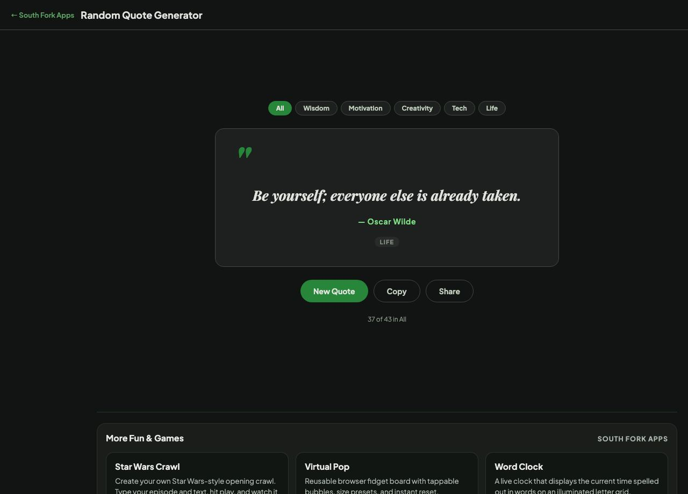

"
Click "New Quote" to get inspired.
Random Quote shows a quotation from a curated collection, filterable by category such as wisdom, technology and creativity.
Quotations are among the most frequently misattributed text in circulation. Einstein, Twain, Churchill and Gandhi are credited with an enormous number of lines they never said, because attaching a famous name makes a quote spread faster.
It is worth checking anything before you use it publicly. A quick search of the exact wording alongside the supposed source usually settles it, and getting it wrong in a presentation is an avoidable embarrassment.
Checking an attribution before you use it:
Result: Einstein, Twain and Churchill are credited with far more lines than they ever said.

v1.0